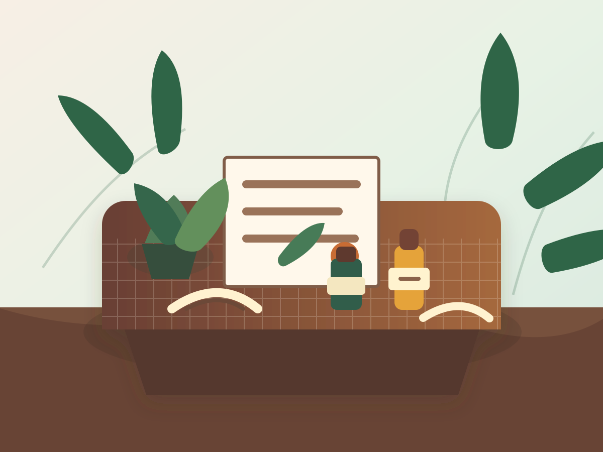

Initial Ayurvedic Consultation
Full intake, prakriti/vikriti review, food map, herbs, and a 30-day care plan.
Clinical Ayurveda, plant pharmacy, daily rhythm coaching
Personalized consultations, herbal formulations, and seasonal bodywork for clients who want grounded, long-term care.
स्वस्थस्य स्वास्थ्य रक्षणम् आतुरस्य विकार प्रशमनम् च ।

Pulse, tongue, lifestyle, digestion, sleep, and season are reviewed together.
Custom herbs, oils, food guidance, and daily rhythm are selected for the client.
Follow-ups tune the plan as routines, symptoms, and seasons shift.
Care menu
Each service includes practitioner notes, product recommendations, and a next-step plan that a client can follow without guessing.
Full intake, prakriti/vikriti review, food map, herbs, and a 30-day care plan.
Short check-in for current clients needing formula adjustments or restocking.
About us
Kavitha S. Ram is a certified Ayurvedic Practitioner with five years of dedicated practice in holistic wellness. Bridging the gap between analytical precision and traditional wisdom, Kavitha brings a unique perspective to her consultations, rooted in her prior professional tenure in the IT and engineering sectors.
Her journey into Ayurveda was born from a deep-seated commitment to healthy living and a pursuit of time-tested, science-based ancient knowledge. Kavitha's practice is built on a foundation of rigorous training from the Kerala Ayurveda Academy in Milpitas, CA. Further enhancing her ability to interpret classical texts, she is proficient in reading, writing, and speaking Sanskrit.
This multi-disciplinary background allows Kavitha to provide comprehensive, individualized coaching on diet and lifestyle, as well as recommendations for Ayurvedic formulations that comply with US standards. Kavitha is dedicated to helping clients integrate these ancient principles into the complexities of modern life.
Appointment calendar
Before your visit
Contact us
Share your details and the studio team will follow up with appointment options, product questions, or care plan support.
Disclaimer: The information provided on this website and during consultations is for educational and wellness purposes only. Kavitha S. Ram is not a medical doctor. Ayurvedic services are not intended to substitute for professional medical advice, diagnosis, or treatment. We do not guarantee the cure of any illness. Please consult your primary healthcare provider regarding any health concerns or before making changes to your medical regimen.